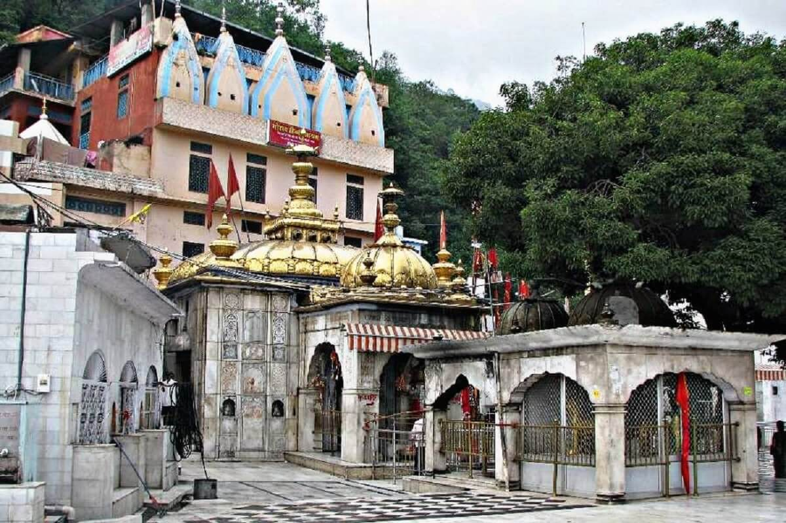

Jawalamukhi Temple
ज्वालामुखी मंदिर


The temple at Jwalamukhi takes its name directly from the phenomenon it enshrines: 'Jwala' for flame and 'mukhi' for 'faced one', denoting the goddess whose presence is held to issue from the earth as fire rather than stone or metal. Tradition places its founding legend in a dream experienced by Raja Bhumi Chand of the Katoch dynasty of Kangra, who is said to have been led to the site after natural flames were reported emerging from the hillside; he subsequently built the first shrine to mark the spot. Within the wider Shakti Peetha mythology, where the body of the goddess Sati is said to have fallen in fragments across the subcontinent after Vishnu severed her corpse, the Jwalamukhi site is identified specifically with her tongue, giving the location its particular standing among the fifty-one recognised Peethas.
As a living Shakti Peetha, Jwalamukhi occupies a distinct place among Hindu pilgrimage sites because worship here is directed not at a carved or cast image but at nine natural flames that burn continuously from fissures in the rock, each conventionally associated with a separate form of the goddess, including Mahakali, Annapurna, Chandi, Hinglaj and Saraswati among others, collectively invoked as the Navadurga. This absence of an idol places the temple in a small category of Indian shrines built around a natural phenomenon rather than an image, and it has made Jwalamukhi a point of reference in discussions of nature-centred goddess worship. The site's religious importance is matched by its political history, having drawn patronage and recorded visits from Mughal and Sikh rulers across several centuries, which lent it standing beyond the immediate region of Kangra.
The flames themselves are fed by natural gas escaping through fissures in a geological formation that some local accounts describe as lying over a dormant volcanic zone, though the more commonly cited explanation attributes the phenomenon to underground gas deposits venting through cracks in the limestone rock rather than active volcanism. The present temple structure, rebuilt and embellished over successive centuries, is capped by a gold-plated dome, a feature added when Maharaja Ranjit Singh, who visited the shrine in 1809 and again in 1815, had the dome gilded as an offering; his son Kharak Singh separately donated a pair of silver-plated folding doors to the sanctum. The temple complex also houses a distinctive metal umbrella of uncertain composition, which local tradition links to an offering made by Akbar, kept on display within the temple precincts alongside the main shrine.
A specific legend tied to the Mughal period recounts the devotee Dhyanu Bhagat, who travelled to seek Akbar's permission to visit the shrine and was tested by the emperor, who reportedly severed the head of a horse and challenged him to restore it through the goddess's power; the episode, central to local retellings of the temple's history, is cited as the origin of Akbar's subsequent gold umbrella offering, which legend holds was transformed into an unidentifiable alloy by the goddess as a rebuke to royal pride. Separately, some regional accounts assert that Akbar, unable to extinguish the flames despite repeated attempts using diverted water channels, ordered damage to the structure, an episode that has become part of the oral history explaining the temple's later reconstruction phases. These narratives, while not uniformly verified across historical sources, remain central to the devotional memory associated with the site.
The temple today functions as an active pilgrimage destination administered by the Himachal Pradesh temple trust under the state's Hindu religious endowments framework, which oversees its maintenance, security and the large seasonal influx of pilgrims during the Navratri festivals in spring and autumn, when the surrounding town of Jwalamukhi swells with visitors from Punjab, Himachal Pradesh and beyond. The shrine is also linked administratively and devotionally with the nearby Chintpurni temple, another prominent Shakti Peetha in the same district, and pilgrims frequently combine visits to both as part of a single circuit through Kangra's temple towns. Jwalamukhi SO, the post office serving the town, situates the shrine within the everyday civic and postal geography of Kangra district even as it continues to draw visitors primarily for reasons unrelated to administration, underscoring how thoroughly the temple has shaped the identity of the town that grew up around it.
| Date of Introduction | November 24, 2004 |
|---|---|
| Address | Sub Postmaster, |
| Jawalamukhi SO, | |
| Kangra (dt.), Himachal Pradesh - 176031. |